RDF in Zarr
Introduction
- Project sponsored by NumFocus
- Research project for Zarr technology
- Other projects sponsored by Numbfocus
- Jupiter
- MatPlotLib
- Pandas
- Project sponsored by NumFocus
- Research project for Zarr technology
- Other projects sponsored by Numbfocus
- Jupiter
- MatPlotLib
- Pandas

(Subject, Predicate, Object)

PREFIX :
PREFIX xsd:
:The_Beatles rdf:type :Band .
:The_Beatles :name "The Beatles" .
:The_Beatles :member :John_Lennon .
:The_Beatles :member :Paul_McCartney .
:The_Beatles :member :Ringo_Starr .
:The_Beatles :member :George_Harrison .
:John_Lennon rdf:type :SoloArtist .
:Paul_McCartney rdf:type :SoloArtist .
:Ringo_Starr rdf:type :SoloArtist .
:George_Harrison rdf:type :SoloArtist .
:Please_Please_Me rdf:type :Album .
:Please_Please_Me :name "Please Please Me" .
:Please_Please_Me :date "1963-03-22"^^xsd:date .
:Please_Please_Me :artist :The_Beatles .
:Please_Please_Me :track :Love_Me_Do .
:Love_Me_Do rdf:type :Song .
:Love_Me_Do :name "Love Me Do" .
:Love_Me_Do :length 125 .
:Love_Me_Do :writer :John_Lennon .
:Love_Me_Do :writer :Paul_McCartney .
UniProt SPARQL Endpoint